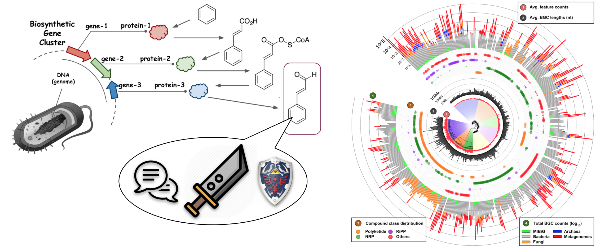
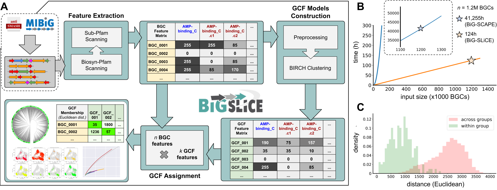
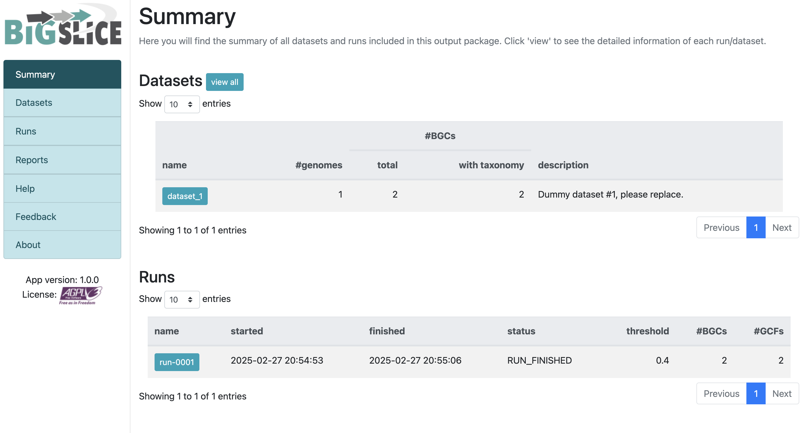

Introduction
随着基因组挖掘技术的进步，生物合成基因簇（BGCs）的研究已成为天然产物发现的核心环节。目前，超过20万个公开的微生物基因组中蕴藏着丰富的化学多样性信息。然而，现有的工具在处理大规模BGCs时，常因基于网络的聚类方法效率低下而面临瓶颈。
BiG-SLiCE（Biosynthetic Gene clusters - Super Linear Clustering Engine） 应运而生，这是一款专为高效聚类大规模BGCs而设计的工具。它通过将BGCs映射到欧几里得空间，以近乎线性的方式将BGCs分组为基因簇家族（GCFs）。在短短10天内，BiG-SLiCE成功分析了来自209,206个微生物基因组和宏基因组组装基因组（MAGs）的1,225,071个BGCs，并构建了全球次级代谢多样性的分布图谱，揭示了未被开发的生物合成潜力。此外，BiG-SLiCE还提供了“查询模式”，能够快速将新测序的BGCs归类到已有的GCFs中，并配备了强大的可视化引擎，便于用户探索数据。这一工具不仅加速了天然产物的发现，还为构建全球可搜索的BGC网络奠定了基础。
BiG-SLiCE的开源地址：https://github.com/medema-group/bigslice
BGCs（以及GCFs）与催化酶及其编码途径产生的化合物直接相关，因此可以作为探索微生物次级代谢化学空间的代理。通过编目所有已测序微生物基因组中的GCFs，可以全面了解现有的化学多样性，并为未来的先导化合物发现提供方向。例如，可以重点关注具有新颖潜力的物种，或识别已知抗生素生产BGC的天然变体。然而，进行此类全球分析需要能够处理海量数据的聚类算法。尽管过去五年中工具的处理能力有所提升（从2014年的11,000–33,000个BGCs到2019年的73,260个），但与当前可用数据量相比仍显不足。截至2020年3月27日，antiSMASH-DB和IMG-ABC两大BGC数据库共包含565,096个BGCs，预测自85,221个细菌基因组。若考虑未覆盖的基因组和宏基因组，这一数字将更大。例如，NCBI RefSeq数据库中的约180,000个细菌基因组可能产生超过1,000,000个BGCs。
处理如此大规模的数据集，即使是目前最快的工具（如BiG-SCAPE）在36核CPU上也需要约37,000小时运行时间，这在实际中几乎不可行。主要瓶颈在于构建相似性网络和聚类分析时使用的成对BGC比较方法，其时间复杂度为O(n²)。因此，迫切需要一种能够更好适应基因组数据增长的替代方法。为此，研究者开发了BiG-SLiCE（Biosynthetic Genes Super-Linear Clustering Engine），它将BGCs映射到欧几里得空间，采用分区聚类算法，时间复杂度接近线性[∼O(n)]，从而能够快速分析大规模BGC数据集，实现真正全球化的GCF分析。
为了实现大规模分析，BiG-SLiCE在设计时将可扩展性和速度作为首要目标。与之前的工具BiG-SCAPE（能够敏感捕捉BGCs之间域结构和序列相似性的细微差异）不同，BiG-SLiCE能够在36核CPU、128GB内存的机器上，以不到一周的时间处理超过120万个BGCs的输入数据，同时保持足够的灵敏度以区分输入BGCs中的关键生物合成“信号”。此外，为了便于用户探索和分析结果，BiG-SLiCE还提供了交互式、易于使用的可视化输出，且对软硬件要求极低。
Installation
安装方法非常简单，用以下两种选一个即可
- 从PyPI安装（稳定版）
|
|
- 从源码安装（开发版——仅适用于熟悉操作的用户）
|
|
然后下载最新的HMM模型（约271MB压缩文件）
|
|
如果感觉下载太慢了，也可以手动下载：https://github.com/medema-group/bigslice/releases/download/v2.0.0rc/bigslice-models.2022-11-30.tar.gz，下载后重命名为bigslice_models.tar.gz放到whcih download_bigslice_hmmdb的统一目录下再运行即可，就会跳过下载步骤。
最后检查安装是否成功
|
|
成功安装后，将显示如下信息：
|
|
Usage
BiG-SLiCE 运行模式
[模式1] 聚类分析
解析输入数据集，构建GCF模型（BIRCH聚类），并根据指定阈值（T）进行成员分配。
参数说明：
-i|--input_folder <folder_path>：输入文件夹路径，需包含datasets.tsv文件及数据集子文件夹。--resume：继续上一次的聚类运行（不要与--input_folder同时使用）。--complete：构建GCF模型时，仅使用完整的BGCs（antiSMASH > 4.2 标注为on_contig_edge = False的BGCs）。--threshold：用于GCF模型构建（BIRCH算法）和成员分配的聚类阈值（T）。与--threshold_pct互斥，使用-1关闭此参数（默认：300）。--threshold_pct：基于数据间成对距离的随机采样计算聚类阈值（T），取第N百分位值作为阈值。与--threshold互斥，使用-1关闭此参数（默认：-1）。
[模式2] GCF查询
基于[模式1]生成的GCF模型，从输入文件夹中的BGC GenBank文件中提取特征并进行成员分配。
参数说明：
--query <folder_path>：输入文件夹路径，需包含所有BGC的GenBank文件（支持antiSMASH4的clusterXXX.gbk、antiSMASH5的regionXXX.gbk或MIBiG ≥ 2.0的BGCXXXXXXX.gbk）。--query_name：为查询运行指定唯一名称，便于在输出可视化中追踪。
[模式1+2] 通用参数
适用于聚类和查询模式的参数。
参数说明：
--run_id：指定运行ID进行查询（或继续聚类），而非使用最新运行（可在输出可视化中查看运行ID列表）。--n_ranks <N_RANKS>：为每个BGC的成员分配过程取N个最佳GCF匹配（默认：5）。--program_db_folder <PROGRAM_DB_FOLDER>：HMM库路径（默认：/mnt/local_scratch/kauts001/general-env/bin/bigslice-models）。
CPU/RAM优化
-t|--num_threads：并行运行的作业数（默认：56）。--hmmscan_chunk_size：将biosyn_pfam扫描拆分为每组N个BGCs的块（默认：100）。--subpfam_chunk_size：将sub_pfam扫描拆分为每组N个BGCs的块（默认：100）。--extraction_chunk_size <EXTRACTION_CHUNK_SIZE>：将特征提取拆分为每组N个BGCs的块（默认：100）。--scratch：不将Sqlite3数据库加载到内存中（降低RAM使用，但可能降低速度）。
[Misc] 其他可选参数：
-h, --help显示帮助信息。--export-tsv <folder_path>将现有的预计算输出数据导出为TSV格式文件（指定目标文件夹路径）。--program_db_folder PROGRAM_DB_FOLDER指定HMM库的路径（默认路径：/share/home/jianglab/pengchen/miniconda3/envs/antismash_5.2.0/bin/bigslice-models）。--version显示BiG-SLiCE的版本信息。
Example
可以使用提供的示例输入文件夹进行“最小化”测试运行：
下载https://github.com/medema-group/bigslice/tree/master/misc/input_folder_template这个文件夹，里面只有1个dataset，1个genome，2个gbk。
|
|
这里我遇到了一个问题：
|
|
应该是pyhmmer的版本问题，我尝试安装v0.10.7版本后解决：
|
|
通过以上步骤，可以轻松安装并运行 BiG-SLiCE，开始大规模 BGC 聚类分析！我测试了运行了2min，消耗内存160MB
Input files
为了充分利用BiG-SLiCE的强大功能，其输入的BGC文件需要按数据集和基因组的结构进行组织。一个典型的输入文件夹可能如下所示：
|
|
- datasets.tsv 文件
该文件需要严格命名为 datasets.tsv，并放置在输入文件夹的根目录中。它是一个描述所有BGC元数据的文件，BiG-SLiCE使用它来解析输入文件夹中的所有BGC数据。该文件应该是一个以制表符分隔的文件（.tsv），每一行按以下顺序包含以下内容： • 数据集名称 • 数据集文件夹的路径（相对于输入文件夹根目录的路径） • 分类信息文件路径（见 <taxonomy_X.tsv> 文件） • 数据集描述
以 # 开头的行将被解析器跳过，因此可以用来定义表头等。可以从代码库下载一个模板 datasets.tsv 文件作为起始点。
- <dataset_X> 文件夹
数据集是BiG-SLiCE中用来分组基因组和BGCs的灵活分类方案。例如，可以根据样本来源将Metagenome-Assembled Genomes（MAGs）归为一个数据集，也可以根据原始文献将基因组和MAGs归类，用于元分析研究。每个数据集文件夹下应直接包含基因组文件夹。
- <genome_X> 文件夹与 <genome_X.regionXXX.gbk> 文件
这些文件夹是由antiSMASH运行产生的输出文件夹，包含 <genome_name>.regionXXX.gbk（antiSMASH 5）或 <genome_name>.clusterXXX.gbk（antiSMASH 4）文件。此外，MIBiG >= 2.0格式的文件（名为 BGCXXXXXXX.gbk，可以通过“Download GenBank summary file”获取）也被BiG-SLiCE接受。请确保不修改这些命名格式，因为BiG-SLiCE依赖它们快速区分集群文件（clustergbks）和常规基因组文件。
- <taxonomy_X.tsv> 文件
虽然可以从antiSMASH 5（和MIBiG >= 2.0）生成的cluster genbank文件中提取分类信息（因为这些文件保留了原始基因组的注释），但这些信息并没有统一的方式来为提供的分类名（通常是分号分隔的 ;）指定等级（如：界、门、纲、目、科、属、种等）。为了确保最佳的注释质量和分析结果，BiG-SLiCE要求用户为每个数据集手动提供分类学元数据（如果可能的话），并以制表符分隔的文件（.tsv）格式包含以下内容（按照此顺序）：
|
|
为了确保所有数据集中的分类名称一致，建议使用相同的参考数据库为分类名称指定等级。为了帮助用户自动化这一过程，BiG-SLiCE提供了一些Python脚本，可以基于原始输入基因组（而非集群基因组文件）使用GTDB工具包为分类信息赋予等级（此脚本仅适用于完整的古菌和细菌基因组，下载脚本）。如果基因组来自NCBI RefSeq/GenBank（即具有GCF_*或GCA_*号的基因组），可以使用此脚本从GTDB API提取分类信息。
Output
输出文件夹结构：
|
|
直接这样的输出db文件是很难查看的，新版介绍可以用--export-tsv导出表格，
|
|
但是目前有AttributeError: 'tuple' object has no attribute 'values'的报错，官方还没解决。但是可以自己使用sqlite3对结果的data.db文件进行查看和文件导出。
或者使用用户交互输出：
BiG-SLiCE的输出文件夹包含处理后的输入数据（以SQLite3数据库文件的形式）以及一些脚本，这些脚本支持一个小型的Web应用程序来可视化这些数据。要运行该可视化引擎，按照以下步骤操作：
- 安装Web应用的依赖包： 首先，确保安装了所需的依赖包。运行以下命令来安装requirements.txt中列出的所有依赖：
|
|
- 启动Flask服务器： 然后，通过以下命令启动Flask服务器：
|
|
默认情况下，服务器会在端口5000上启动。如果需要自定义端口，可以在命令中指定端口号。
- 打开浏览器访问： 启动服务器后，浏览器将显示如下信息：
Running on http://0.0.0.0:5000/ (Press CTRL+C to quit)
在浏览器中输入 http://0.0.0.0:5000 即可访问Web应用进行数据可视化。
通过上述步骤，您可以轻松启动BiG-SLiCE的可视化应用，查看处理结果和数据分析图表，如下图所示：
BGC Atlas
上次提到过的BGC Atlas，那个数据库用的就是BiG-SLiCE的输出结果。该数据库可供下载的有这几个文件：
-
complete-bgcs.tar.gz A tarball containing the GBK files for only the complete BGC (3.5GB).
-
all-bgcs.tar.gz A tarball containing the GBK files for all BGCs (13GB).
-
bigslice_2.0.0_T0.4_16April.tar.gz A tarball containing the BiG-SliCE clustering of complete BGCs (2.0 GB).
-
atlas_17_07_2004.sql The sql dump of the BGC-Atlas database (2.0 GB).
bigslice_2.0.0_T0.4_16April.tar.gz文件解压后就是BiG-SLiCE的输出文件夹，里面有result文件夹，里面有data.db文件，这个就是BiG-SLiCE处理后的数据库文件。
另外atlas_17_07_2004.sql里面有所有用到的宏基因组metadata，但它是个PostgreSQL database dump，作为文本文件可以直接打开，但不好转换为数据库或是表格，需要用一下postgresql。
使用案例
比如我们自己产生的BGC想要和BGC Atlas进行比较，就可以用[模式2] GCF查询：
|
|
然后就会在big_slice_test_out目录下产生一个report文件夹（如果原来没有的话），report文件夹下可以找到自己本次运行的结果。可以考虑用户交互输出或用数据库软件查看结果。
主要是查看distance（membership_value）这一列，按默认定义的话<0.4才可以认为我们的query和数据库已有的部分聚成了GCF。
然后我们可以查看相应的GCF中有哪些BGCs以及所对应的metadata：
比如我们的BGC和BGC Atlas中的GCF 13734的distance<0.4，可以认为也是GCF 13734的一员，然后快速的方法是去官网查询https://bgc-atlas.cs.uni-tuebingen.de/bgcs?gcf=13734，可以看到一共有258条核心BGC，我们可以下载相应的metadata（一次最多1000条），然后和我们的进行比较分析。
但上述方法只适合查询的BGC不多的情况，很多的话最好还是考虑用代码处理atlas_17_07_2004.sql文件，获取metadata，需要使用postgresql进行处理：
假设你已经会用并成功运行了postgresql（有点难）
|
|
|
|
|
|
然后就可以查看csv并和自己的数据整合分析。
Reference
Satria A Kautsar, Justin J J van der Hooft, Dick de Ridder, Marnix H Medema, BiG-SLiCE: A highly scalable tool maps the diversity of 1.2 million biosynthetic gene clusters, GigaScience, Volume 10, Issue 1, January 2021, giaa154. https://doi.org/10.1093/gigascience/giaa154